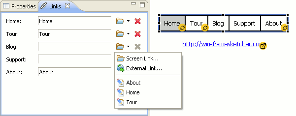

) in Project Explorer view first.
) in Project Explorer view first.Screen links let you create simple interactive prototypes for your website or software application.
To link two screens select a widget and then specify the linked screen using the Links view. Widgets with multiple items allow you to specify a link target for each of them. A small yellow overlay icon lets you quickly see where your links are. You can click it to open the link.

Linked screen can be located in any folder or even in another another project. To choose the linked screen, click the Change Screen Link icon and search for the desired screen. It’s also possible to quickly link to a screen located in the same folder by selecting it from the drop-down menu.
You can also specify an external link, like http, mailto or another type. For this click the drop-down and select External Link…. External links are marked using a slightly different overlay icon.
Another way to link screens is to drag & drop screen files from Project Explorer view into the Screen Editor. This is done by dragging screen files while holding a modifier key (Alt or Ctrl+Shift on Windows, Ctrl on Mac, Ctrl+Shift on Linux). When you do this the mouse cursor changes to indicate linking mode and widgets that can be linked are highlighted under the cursor while you drag over them. Drop the screen file to create the link. Note that you may have to uncheck the Link with Editor option () in Project Explorer view first.
To remove a link for an item use Remove Link icon.
To test your prototype launch the full-screen presentation mode. Clickable areas are highlighted and clicking on them takes you to the linked screen. You can disable link highlighting from the context menu. Arrow keys let you go back to the previous screen.
You can also create clickable PDF and HTML documents. To do so put all the linked screens of your prototype into a storyboard and then export it.
Next: Keyboard Shortcuts